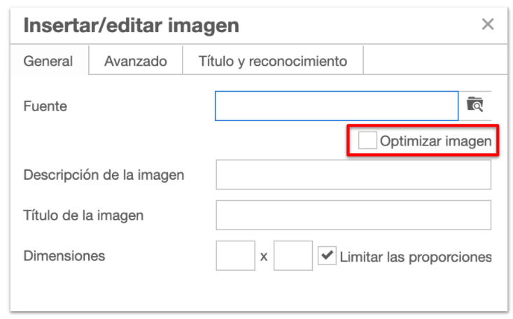

Insertar imágenes
A la hora de crear recursos digitales es sumamente importante optimizar las imágenes que incluimos para no sobrecargar el peso del archivo innecesariamente. A partir de la versión 2.6, al insertar una imagen, tenemos la posibilidad de optimizarla, reduciendo así su peso.

Para utilizar esta funcionalidad debemos seguir los siguientes pasos:
- Marcar la opción "Optimizar imagen" ANTES de seleccionar la imagen en nuestro equipo.
- Hacer clic en el icono de búsqueda

- Seleccionar la imagen entre los archivos del equipo.

- Definir el tamaño máximo que puede alcanzar cualquier de las dimensiones. En el caso de imágenes con extensión jpg también se podrá seleccionar la calidad.

- Una vez optimizada (se puede ver la diferencia de peso en la parte inferior) haremos clic en Finalizar.
- Si necesitamos editar de nuevo la imagen, tendremos que guardar antes el iDevice.
{kind=link}
Como se ha comentado, es recomendable no sobrecargar las páginas con imágenes de gran tamaño. Esto haría que se muestren lentas y, si la conexión no es buena, pueden tardar más de 3 segundos en cargar.
Aunque, también podemos decidir que esto sea así porque deseamos que el usuario pueda pulsar sobre la imagen y agrandarla (ya veremos qué es lightbox) para poder ver cómodamente toda su información. Naturalmente, no debemos abusar de esta función varias veces en la misma página.
De acuerdo a algunos estudios realizados en el 2019, se pudo determinar que el 53% de los visitantes a sitios web, los abandonaban si el sitio tardaba más de 3 segundos en cargar.
Características de la imagen
Haremos clic en el icono Insertar/editar imagen  y rellenaremos los campos solicitados:
y rellenaremos los campos solicitados:
- Pestaña general:
- Fuente: indicaremos al URL de origen o haremos clic en el símbolo de la carpeta para buscar el archivo en nuestro equipo.
- Descripción de la imagen: es el texto que leerá un lector de pantalla en caso de utilizarse, por lo que se recomienda rellenarlo para darle mayor accesibilidad a los materiales.
- Título de la imagen: escribiremos el texto que queremos que aparezca al pasar el ratón por encima. También se recomienda que se complete por accesibilidad.
- Dimensiones: opcionalmente se pueden definir las dimensiones de la imagen a insertar.

- Pestaña Título y reconocimiento: para realizar la atribución correspondiente de las imágenes que insertamos, rellenaremos los campos de esta pestaña:
- Título de la imagen: título de la imagen a insertar
- Enlace del título: enlace a la imagen (si está subida a la red)
- Origen/autor: nombre del autor o de la fuente
- Licencia: elegir la licencia correspondiente o escribir una Licencia personalizada

Desde la versión 2.6, se ofrece la posibilidad de optimizar la imagen a insertar desde la pestaña General. Si marcamos PREVIAMENTE la opción "Optimizar imagen" podremos definir el peso y calidad con las que se incluirá la imagen en proyecto, mejorando el peso total de proyecto que estamos creando.
Aparece Lumia. Lumia dice... ¿Quieres más información?
- Más información sobre cómo insertar una imagen y cómo utilizar el optimizador en el manual de eXe
- Vídeo: Insertar una imagen
Obra publicada con Licencia Creative Commons Reconocimiento Compartir igual 4.0